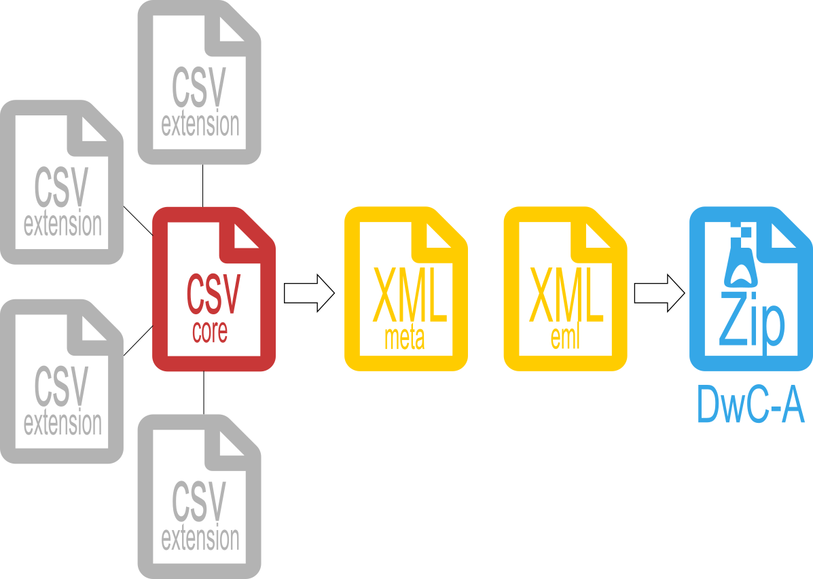

O Darwin Core Archive (DwC-A) é o arquivo padrão para publicação de dados da biodiversidade usando os termos Darwin Core. Este formato de arquivo é o padrão para publicação de dados no OBIS e GBIF.
O modelo de organização do Darwin Core Archive é descrito como um esquema de estrela com uma única tabela core, esta contendo occorrências ou eventos no centro da estrela. Outras tabelas podem ser associadas a tabela core, estas podem trazer outras informações associadas aos registros de ocorrências como: densidade, método de coleta, temperatura, dentre outras. Juntamente com os componentes DwC-A são adicionados também dois arquivos XML: um descreve o arquivo e a estrutura dos dados, meta.xml, e o outro contêm os metadados. eml.xml. Ao final todos estes componentes são transformados em uma pasta zip. Toda documentação a respeito do DwC-A está disponível no Darwin Core text guide.

Estrutura de um Darwin Core Archive
A publicação dos dados da biodiversidade amostrada pelo PELD-ILOC visa atender a Resolução Normativa 009/16 que intitui a Política de Dados do Programa de Pesquisa Ecológica de Longa Duração (PELD). O objetivo desta RN é regulamentar as formas de disponibilização, acesso e uso dos dados gerados pelos pesquisadores da rede PELD.
Considerando a importância dos dados coletados no âmbito PELD-ILOC e a sua importância para a gestão ambiental, estes devem estar disponíveis para a sociedade. Além disso, o PELD é membro International Long Term Ecological Research (ILTER) e o Global Biodiversity Information Facility (GBIF).
Tendo em vista a importância dos dados obtidos até o momento, é de extrema importância que estes estejam organizados e conferidos. Desata maneira é garantida a qualidade dos dados publicados, bem como fica otimizada a curadoria e processamento destes para publicação nos repositórios de dados da biodiversidade.
Este item visa apresentar um exemplo de conversão de um arquivo em formato tidy, ou longo, para os arquivos necessários na criação de um Darwin Core Archive (DwC-A). Para reproduzir o exemplo acesse uma amostra dos dados fictícios neste repositório. Os scripts usados para a construção dos DwC-As dos dados do PELD-ILOC estarão disponíveis no Github em repositórios privados.
rm(list = ls())
library(tidyverse)
# insert you directory
baseDir = "diretorio onde estão os dados"
# file name
fish_data= "peld_iloc_peixes_recifais_EXEMPLO_Thiago_Silveira_2020_08_11.csv"
coords_data = "Peld_Site_Coordinates_2021_07_12.csv"
DF.sites = read_delim(file.path(baseDir, fish_data),
na="NA",
delim = ",",
skip_empty_rows = TRUE)
spec(DF.sites)
glimpse(DF.sites)
DF.coords = read_delim(file.path(baseDir, coords_data),
na="NA",
delim = ",",
skip_empty_rows = TRUE)
spec(DF.coords)
glimpse(DF.coords)Devido ao formato incorreto das coordenadas (ex .: lon -32.234.234 | lat 3.808.942) foi identificada a necessidade de uma verificação substancial em todas as coordenadas e nomes de sites apresentados no arquivo original. Após uma primeira verificação, foram identificados formatos decimais incorretos (ex .: -33.345.323, …) e valores invertidos para latitude e longitude.
Para corrigir os nomes e coordenadas dos sites, foi criada uma planilha contendo os nomes e coordenadas corrigidos para todos os sites pesquisados(diponível aqui). As correções foram realizadas por meio de inspeção nas ortofotografias e comunicação pessoal com os pesquisadores do PELD-ILOC. Além disso, comparamos as coordenadas disponíveis com os mapas apresentados nas publicações Longo et al. (2015) e Krajewski e Floeter (2011). Após a verificação das coordenadas e nomes dos sites, foi criada uma planilha com os dados corrigidos, aqui denominada DF.coords no script.
DF.coords
# Joining the tables using as reference the site (DF.sites) and site_coords (DF.coords)
DF.sites = DF.sites%>%
left_join(DF.coords, by = c("site" = "site_coord"), copy = TRUE)
# Reordering DF.sites with the corrected coordinates and site names
DF.sites = DF.sites %>%
select(c(-site, -lon_DD, -lat_DD, -island_coord, -checking_status, -Obs)) %>%
relocate(c(lon_DD_coord, lat_DD_coord), .after = observer) %>%
relocate(New_name_coord, .after = island)
DF.sites = DF.sites %>%
dplyr::rename(site = New_name_coord,
lon_DD = lon_DD_coord,
lat_DD = lat_DD_coord)
DF.sitesA tabela event Core armazena as informações sobre o evento de amostragem. Todas as informações sobre o evento de amostragem, event Core, estão vinculadas aos eventos registrados em eventID. O eventID consiste na combinação de ilha-ano-transect_number (ex.: noronha_2007_65). As próximas informações consideradas foram eventDate, data de amostragem formatada como AAAA-mm-dd, AAAA-mm ou AAAA. O registro completo da data assumiu formatos distintos devido à ausência das informações nos dados originais, arquivo excel. Como nem todas as amostragens foram realizadas no mesmo dia, para cada transecto, o eventDate foi preenchido no nível transect_ID.
A latitude e a longitude, em graus decimais, foram extraídas dos dados originais. Como os locais de amostragem ocorreram em ilhas diferentes com um ponto fixo, podemos preencher decimalLongitude e decimalLatitude no evento de nível de site. O censo visual varia em profundidade no mesmo local, então incorporamos o termo maximumDepthInMeters, preenchendo o registro de profundidade no nível do transecto do local.
A lista de core term definidos pelo Darwin Core mostra os termos que descrevem a localização como island, nos dados do excel esta informação é descrita como locality. Além disso, os principais dados são descritos na coluna site como o nome do local levantado em cada ilha, portanto usamos esta informação como site.
# Data from long format data - Reshape Data
#Creating a data column handling missing months and days as "Date"
DF.sites = DF.sites %>%
mutate(across(everything(), as.character))%>%
mutate(Date = ifelse(is.na(year_YYYY) == FALSE & is.na(month_mm) == TRUE & is.na(day_dd) == TRUE, year_YYYY,
ifelse(is.na(year_YYYY) == FALSE & is.na(month_mm) == FALSE & is.na(day_dd) == TRUE, paste(year_YYYY,month_mm, sep="-"),
ifelse(is.na(year_YYYY) == FALSE & is.na(month_mm) == FALSE & is.na(day_dd) == FALSE,
paste(year_YYYY,month_mm, day_dd, sep = "-"), paste("NA"))))) %>%
arrange(as.integer(transect_n))
DF.sites
# Aggregating by unique transect_id, locality, site, Date, lat_DD, lon_DD
DF.event = DF.sites %>%
dplyr::group_by(transect_id, island, site, Date, depth_m, lat_DD, lon_DD)
# changing column names to DwC-A terms
event_core = DF.event %>%
dplyr::rename(eventID = transect_id,
locality = site,
eventDate = Date,
maximumDepthInMeters = depth_m,
decimalLatitude = lat_DD,
decimalLongitude = lon_DD) %>%
dplyr::select(eventID, island, locality, eventDate,maximumDepthInMeters, decimalLatitude, decimalLongitude, georeferenceProtocol)
# Pasting Additional information
event_core = event_core %>%
add_column(samplingProtocol = "Underwater Visual Survey - 20 meters x 2 meters transects",
samplingEffort = "one observer by 20 meters x 2 meters Underwater Visual Survey",
sampleSizeValue = "40",
sampleSizeUnit = "square meter",
geodeticDatum = "WGS84",
verbatimCoordinateSystem = "decimal degrees",
Country = "Brazil",
countryCode = "BR")
# Formatting - Islands names
event_core = event_core %>%
mutate(island = stringr::str_replace_all(island, pattern = "noronha", replacement = "Fernado de Noronha")) %>%
mutate(island = stringr::str_replace_all(island, pattern = "rocas", replacement = "Atol das Rocas")) %>%
mutate(island = stringr::str_replace_all(island, pattern = "stpauls_rocks", replacement = "São Pedro e São Paulo")) %>%
mutate(island = stringr::str_replace_all(island, pattern = "trindade", replacement = "Trindade"))
# Formatting - locality - taking off "_" and capitalizing the first letter
# special characters
# unique(as.factor(event_core$locality)) for mapping locality names
event_core = event_core %>%
mutate(locality = str_replace_all(locality, pattern = "_", replacement = " ")) %>%
mutate(locality = stringr::str_replace_all(island, pattern = "Praia da Conceicao", replacement = "Praia da Conceição")) %>%
mutate(locality = stringr::str_replace_all(island, pattern = "Laje Dois Irmaos", replacement = "Laje Dois Irmãos")) %>%
mutate(locality = stringr::str_replace_all(island, pattern = " Cemiterio", replacement = " Cemitério")) %>%
mutate(locality = stringr::str_replace_all(island, pattern = "Salao", replacement = "Salão")) %>%
mutate(locality = stringr::str_replace_all(island, pattern = "Cabeco Tartaruga", replacement = "Cabeço Tartaruga")) %>%
mutate(locality = stringr::str_replace_all(island, pattern = "Boia", replacement = "Bóia")) %>%
mutate(locality = stringr::str_replace_all(island, pattern = "Naufragio", replacement = "Naufrágio")) %>%
mutate(locality = stringr::str_replace_all(island, pattern = "Tunel", replacement = "Túnel")) %>%
mutate(locality = stringr::str_replace_all(island, pattern = "Farilhoes", replacement = "Farilhões")) %>%
mutate(locality = stringr::str_replace_all(island, pattern = "Paredao", replacement = "Paredão"))
rm(DF.event)
event_coreA próxima tabela tem os nomes científicos como cientificName e os códigos de espécies listados em taxonID. Novamente, todas as ocorrências estão vinculadas ao respectivo transecto, nesta tabela a referência ao transecto é chamada de id. Na coluna id da tabela, esta faz referência aos eventos na tabela principal. Cada ocorrência, cada espécie, é rotulada como ocorrenceID seguindo como registros sequenciais (occ_1, occ_2, …).
Antes da tabela final, todas as espécies foram validadas usando a função wormsbynames (pacote worms). Todos os registros com problemas relativos a nomes foram verificados com os especialistas do PELD-ILOC. Além disso, criamos a coluna taxonRank indicando a classificação em espécie ou gênero.
Note que não temos como inserir especies como Malacoctenus_sp1 ou Malacoctenus_sp1. Estes dados ficam de referência interna para os pesquisadores do PELD-ILOC e para a construção desta parte da tabela a classificação ficou em gênero. Algumas espécies não estão no worms (ex.: Menaphorus punticulatus) e foi detectada pelo procedimento. Neste caso, esta foi confirmada manualmente.
library(worms)
# Getting species and transect_id
DF.occ = DF.sites %>%
arrange(as.integer(transect_n)) %>%
select(transect_id, transect_n, species_name, observer, abun, size_cm, temp_c)
# adding occurrenceID as occ_n and changing names
DF.occ = DF.occ %>%
add_column( occurrenceID = paste0(DF.occ$transect_id,"_","occ_",row.names(DF.occ))) %>%
select(-transect_n)
# editing names
DF.occ = DF.occ %>%
mutate(species_name = str_replace_all(species_name, pattern = "_", replacement = " ")) %>%
mutate(species_name = str_to_sentence(species_name, locale = "pt")) %>%
relocate(occurrenceID, .after= transect_id)
library(worms)
sp_Names = unique(DF.occ$species_name)
scNames_rank = wormsbynames(sp_Names, verbose = F)
# malacoctenus_sp1 no match
# kyphosus_spp no match
# menaphorus_punticulatus no match
# entomacrodus_spp no match
# coryphopterus_spb no match
# sparisoma_spp no match
# malacoctenus_sp2 no match
# malacoctenus_sp3 no match
# ophioblennius_spp no match
# Changing names in DF.occ
DF.occ = DF.occ %>%
mutate(species_name = str_replace_all(species_name, pattern = "Coryphopterus spb", replacement = "Coryphopterus")) %>% # genus
mutate(species_name = str_replace_all(species_name, pattern = "Entomacrodus spp", replacement = "Entomacrodus")) %>% # genus
mutate(species_name = str_replace_all(species_name, pattern = "Kyphosus spp", replacement = "Kyphosus")) %>% # genus
mutate(species_name = str_replace_all(species_name, pattern = "Malacoctenus sp1", replacement = "Malacoctenus")) %>% # genus
mutate(species_name = str_replace_all(species_name, pattern = "Malacoctenus sp2", replacement = "Malacoctenus")) %>% # genus
mutate(species_name = str_replace_all(species_name, pattern = "Malacoctenus sp3", replacement = "Malacoctenus")) %>% # genus
mutate(species_name = str_replace_all(species_name, pattern = "Ophioblennius spp", replacement = "Ophioblennius")) %>% # genus
mutate(species_name = str_replace_all(species_name, pattern = "Sparisoma spp", replacement = "Sparisoma")) # genus
# running again
sp_Names = unique(DF.occ$species_name)
scNames_rank = wormsbynames(sp_Names, verbose = F)
# Not in worms database
DF.occ %>%
filter(species_name == "Menaphorus punticulatus")
# Create df for full join
name_cd_rk = scNames_rank %>%
select(scientificname, lsid, rank)
DF.occ = DF.occ%>%
full_join(name_cd_rk, by = c("species_name" = "scientificname" ))
# Checking the existence of issues represented as "NA"
# As expected just for Menaphorus punticulatus, without lsid
DF.occ %>%
filter(is.na(lsid) == TRUE)
# Filling rank for Menaphorus punticulatus
DF.occ = DF.occ %>%
mutate_at(vars(rank), funs(ifelse(species_name == "Menaphorus punticulatus","Species", . )))
DF.occ %>%
filter(is.na(rank) == TRUE) #ok
DF.occ = DF.occ %>%
dplyr::rename(
scientificName = species_name,
scientificNameID = lsid,
taxonRank = rank,
recordedBy = observer,
id = transect_id)
# Adding organismQuantityType and basis of record
DF.occ = DF.occ %>%
add_column(organismQuantityType = "number of individuals in 20 meters x 2 meters Underwater Visual Survey",
basisOfRecord = "Human Observation")
DF.occ_obs_count = DF.occ
DF.occ = DF.occ %>%
select(c(-abun, -size_cm, -temp_c))Finalmente, podemos construir a tabela MeasurementOrFact. Nesta tabela, descreveremos algumas informações associadas ao id e occurenceID.
Primeiro adicionaremos o tipo de medição da coluna measurementValue, três níveis - abundância, comprimento e profundidade. A próxima informação necessária é measureUnity para especificar as unidades densidade, comprimento em centímetros e temperatura em graus celsius. A próxima informação é o valor de medição, os valores observados para densidade e comprimento, no arquivo excel são as colunas abun e size_cm. Por fim, adicionaremos o termo recordedBy indicando quem fez a observação, no arquivo excel definido como observador.
#create DF with id, occurenceID, recordedBy, with size_cm, abun and temp_c
DF.eMOF_start = DF.occ_obs_count %>%
select(id, occurrenceID, recordedBy, size_cm, abun, temp_c) %>%
mutate(recordedBy = str_replace_all(recordedBy, pattern = "_", replacement = " ")) %>%
mutate(recordedBy = str_to_title(recordedBy, locale = "pt"))
# Table abundance
#create table measurementType abundance
#create table measurementUnity number of individuals in the transec
#create measurementValue - abund
DF.eMOF_abun = DF.eMOF_start %>%
select(-size_cm, -temp_c) %>%
dplyr::rename(measurementValue ="abun" ) %>%
add_column(measurementType = "abundace",
measurementeUnity = "number of individuals counted on the transect")
str(DF.eMOF_abun)
# Table length
# create table measurementType length
# create table measurementUnity number of individuals in the transec
# create table measurementValue length in cm
DF.eMOF_length = DF.eMOF_start %>%
select(-abun, -temp_c) %>%
dplyr::rename(measurementValue ="size_cm" ) %>%
add_column(measurementType = "length",
measurementeUnity = "mean centimeters")
#create table measurementType temperature
#create table measurementUnity Celsius degrees
#create table measurementValue temp_c
DF.eMOF_temp = DF.eMOF_start %>%
select(-abun, -size_cm) %>%
dplyr::rename(measurementValue = "temp_c") %>%
add_column(measurementType = "temperature",
measurementeUnity = "Celsius degrees")
# Binding rows
DF.eMOF = bind_rows(DF.eMOF_abun, DF.eMOF_length, DF.eMOF_temp)
rm(DF.eMOF_start,DF.eMOF_abun, DF.eMOF_length, DF.eMOF_temp, DF.sites)files = list(event_core, DF.occ, DF.eMOF)
data_names = c("event_core","DF_occ","DF_eMOF")
dir.create("Dwc_Files")
for(i in 1:length(files)) {
path = paste0(getwd(),"/","DwC_Files")
write_csv(files[[i]], paste0(path,"/",data_names[i],".csv"), )
}https://obis.org/manual/dataformat/
https://github.com/gbif/ipt/wiki/samplingEventData#templates
https://github.com/gbif/ipt/wiki/samplingEventData#required-dwc-fields
http://rs.tdwg.org/dwc/terms.htm#samplingEffort - Terms description
Krajewski, J. P. & Floeter, S. R. Reef fish community structure of the Fernando de Noronha Archipelago (Equatorial Western Atlantic): The influence of exposure and benthic composition. Environ. Biol. Fishes 92, 25–40 (2011).
Longo, G. O. et al. Between-habitat variation of benthic cover, reef fish assemblage and feeding pressure on the benthos at the only atoll in South Atlantic: Rocas atoll, NE Brazil. PLoS One 10, 1–29 (2015).